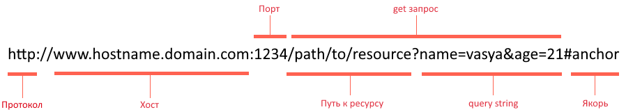
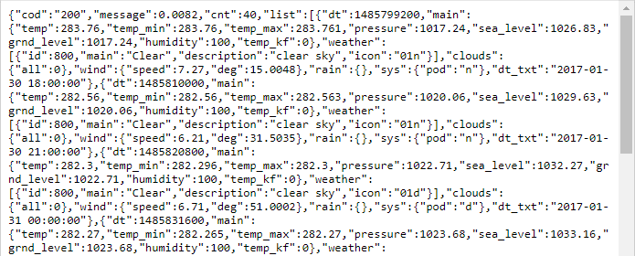
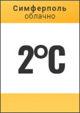

Цель:
Разработать сервис предоставляющий данные о погоде в городе Симферополе на момент запроса. В качестве источника данных о погоде используйте: http://openweathermap.org/. В состав сервиса входит: серверное приложение на языке С++ и клиентское приложение на языке Python.
Серверное приложение (далее Сервер) предназначенное для обслуживания клиентских приложений и минимизации количества запросов к сервису openweathermap.org. Сервер должен обеспечивать возможность получения данных в формате JSON и виде html виджета (для вставки виджета на страницу будет использоваться iframe).
Клиентское приложение должно иметь графический интерфейс отображающий сведения о погоде и возможность обновления данных по требованию пользователя.
Подробности указаны далее.
Общая схема http-запроса представлена на рисунке ниже: 
Протокол: http, https, ftp и другие.
Хост: доменное имя или ip-адрес сервера. Обычно по одному ip-адресу находится несколько сайтов, в этом случае доменное имя используется сервером, чтобы выбрать правильного получателя запроса.
Сетевой порт: число от 0 до 65535. Своеобразное расширения IP-адреса, нужен, чтобы несколько приложений на компьютере одновременно могли работать с сетью. Запрос приходит на IP-адрес, а дальше операционная система отдаёт его тому приложению, которое слушает порт указанный в запросе. Несколько приложений не могут одновременно слушать один и тот же порт благодаря этому пакет Skype не попадёт к Discord и т.д. Обычно веб сервера слушают 80 и 443 порты. 80 - стандартный порт для http запросов, 443 - для https. Браузеры автоматически дописывают номера портов ориентируясь на название протокола, поэтому пользователю это делать не нужно.
Путь к ресурсу: просто строка. Приложение получившее запрос само решает как реагировать на эту строку. В простом случае путь к ресурсу может восприниматься как реальный путь к папке/файлу, где-то на серверном компьютере. В общем случае путь к ресурсу - это способ запустить какую-то функцию в приложении получившем запрос. В результате, функция может как сгенерировать html-страничку и отправить в ответ на запрос, так и запустить процесс форматирования дисков на сервере, если у программы достаточно прав.
query string: набор пар ключ-значение. Идёт после вопросительного знака, пары разделены одним амперсантом (&). Если путь к ресурсу воспринимать как функцию, то query string - это аргументы функции. Порядок пар значения не имеет, лишние пары обычно игнорируются.
Якорь: служит, для того, чтобы промотать у клиента страницу к нужному элементу (заголовку, картинке и т.д.), поэтому данный параметр не попадает в запрос к серверу. В качестве якоря, например можно указать атрибут id html-тега.
Примерно тоже, что и выше, но в видео формате: https://youtu.be/DXB-GJKKNcg и https://youtu.be/N5OKXZvIR1w.
Перейдите на главную страницу сервиса http://openweathermap.org;
Зарегистрируйтесь и войдите в сервис;
В разделе меню API keys сгенерируйте API key;
Изучите пример использования API key http://openweathermap.org/appid#use;
Составьте и протестируйте запрос в браузере (для этого понадобится ваш API Key). В ответ вы должны получить текст в формате JSON:

В разделе openweathermap.org -> API -> One Call API изучите:
Составьте запрос на получение прогноза погоды для Симферополя с почасовым интервалом, в градусах Цельсия, на русском языке;
Протестируйте запрос в браузере. Ответ удобнее изучать в виде дерева, например при помощи JSON Viewer или браузерного расширения, например: JsonDiscovery.
Сервис позволяет получить время в формате json, без регистрации. Составьте запрос для получения времени в Симферополе и изучите формат ответа: http://worldtimeapi.org/pages/schema.
Для работы с сетью используйте библиотеку: https://github.com/yhirose/cpp-httplib.
Клонируйте или скачайте в виде архива репозиторий библиотеки https://github.com/yhirose/cpp-httplib;
Создайте консольный C++ проект;
Перейдите в папку с главным .cpp файлом проекта и создайте папку include. В ней будут размещаться заголовочные файлы библиотек;
В папке include создайте папку cpp_httplib и скопируйте туда файл httplib.h из скаченного ранее репозитория. В дальнейшем сам репозиторий больше не потребуется, его можно удалить;
Перейдите в свойства проекта, в раздел Свойства конфигурации 🠖 C/C++ 🠖 Общие. Справа в разделе Дополнительные каталоги включаемых файлов добавьте путь к каталогу include;
Скопируйте и вставьте в главный .cpp файл следующий код:
xusing namespace httplib; // В этой функции формируем ответ сервера на запросvoid gen_response(const Request& req, Response& res) { // Команда set_content задаёт ответ сервера и тип ответа: // Hello, World! - тело ответа // text/plain - MIME тип ответа (в данном случае обычный текст) res.set_content("Hello, World!", "text/plain");} int main(){ Server svr; // Создаём сервер (пока-что не запущен) svr.Get("/", gen_response); // Вызвать функцию gen_response если кто-то обратиться к корню "сайта" std::cout << "Start server... OK\n"; svr.listen("localhost", 1234); // Запускаем сервер на localhost и порту 1234}Запустите программу и перейдите по ссылке: http://localhost:1234/. Если вы увидели сообщение: "Hello, World!", значит всё сделано правильно.
Это базовый проект сервера, в дальнейшем его нужно будет модифицировать.
Для получения данных от сервисов http://openweathermap.org/ и http://worldtimeapi.org нужно будет посылать им get-запросы. Для этих целей воспользуемся скачанной ранее библиотекой cpp-httplib.
Создайте консольный C++ проект и настройте его аналогичным предыдущему проекту способом.
Скопируйте и вставьте в главный .cpp файл следующий код:
xxxxxxxxxxusing namespace httplib; int main(){ // Создаём клиент и привязываем к домену. Туда пойдут наши запросы Client cli("http://worldtimeapi.org"); // Отправляем get-запрос и ждём ответ, который сохраняется в переменной res auto res = cli.Get("/api/timezone/Europe/Simferopol"); // res преобразуется в true, если запрос-ответ прошли без ошибок if (res) { // Проверяем статус ответа, т.к. может быть 404 и другие if (res->status == 200) { // В res->body лежит string с ответом сервера std::cout << res->body << std::endl; }else{ std::cout << "Status code: " << res->status << std::endl; } } else { auto err = res.error(); std::cout << "Error code: " << err << std::endl; }}Если вы всё сделали правильно, увидите ответ от worldtimeapi.org в виде JSON.
В этом примере мы отправляем get-запрос по адресу http://worldtimeapi.org/api/timezone/Europe/Simferopol. Для этого выполняем три действия:
Создаём переменную с именем cli типа Client и указываем сайт куда будем отправлять запросы. Это обычная переменная и создавать их можно сколько нужно и где нужно.
Нужно указывать только название сайта и только протокол http. Для работы с https придётся выполнить дополнительные настройки.
res->body. Это обычное значение типа std::string. Попробуйте отправить запрос к сервису openweathermap.org который вы составили в пункте I.7
Данный проект в дальнейшем не потребуется, он нужен был только, чтобы попрактиковаться отправлять запросы.
Для работы с JSON используйте библиотеку: https://github.com/nlohmann/json.
Скачайте файл json.hpp отсюда: https://github.com/nlohmann/json/releases. Его также можно найти в репозитории проекта https://github.com/nlohmann/json в папке: single_include/nlohmann.
Создайте консольный C++ проект;
Перейдите в папку с главным .cpp файлом проекта и создайте папку include. В ней будут размещаться заголовочные файлы библиотек;
В папке include создайте папку nlohmann и скопируйте туда файл json.hpp.
Перейдите в свойства проекта, в раздел Свойства конфигурации 🠖 C/C++ 🠖 Общие. Справа в разделе Дополнительные каталоги включаемых файлов добавьте путь к каталогу include;
Скопируйте и вставьте в главный .cpp файл следующий код:
x
using json = nlohmann::json;using namespace std; int main(){// Какой-то JSON в виде строкиstring str =R"({ "pi": 3.141, "happy": true, "name": "Niels", "nothing": null, "answer": { "everything": 42 }, "list": [1, 0, 2], "object": { "currency": "USD", "value": 42.99 }})"; // Парсим строку и получаем объект JSON json j = json::parse(str); // Достаём значения double pi = j["pi"]; cout << "pi " << pi << endl; bool happy = j["happy"]; cout << "happy " << happy << endl; string name = j["name"]; cout << "name " << name << endl; double value = j["object"]["value"]; cout << "value " << value << endl; cout << "every " << to_string(j["answer"]["everything"].get<int>()) << endl; // Идём по массиву for (int i = 0; i < j["list"].size(); i++) cout << "list[" << i << "] = " << j["list"][i] << endl; // Пустой JSON json j2; // Заполняем разными данными j2["num"] = 1; j2["array"] = json::array(); j2["array"].push_back(1); j2["array"].push_back(2); j2["object"] = json::object(); j2["object"].push_back({"PI", pi}); j2["object"].push_back({"exp", 2.71}); // Преобразуем в строку и выводим std::cout << j2.dump(4);}В примере используется сырой (raw) строкой литерал для записи JSON в тексте программы. Всё, что написано после R"( и перед )"; воспринимается не как часть кода, а как текст, то есть не нужно экранировать кавычки и все нажатия клавиши Enter будут записаны в строку как '\n'. Это НЕ является обязательным требованием, и сделано, чтобы не загромождать код лишними символами.
Если значение нужно достать и передать в функцию или выполнить с ним какое-то действие, то нужно использовать метод get<тип>() с указанием типа данных, например как тут: j["answer"]["everything"].get<int>() или j["name"].get<string>().
Изучите пример. Принимать и отправлять данные мы будем в виде строк.
Алгоритм работы серверного приложения (далее Сервера):
Сервер запускается и слушает get запросы приходящие на 3000 порт localhost;
На запрос Сервер должен ответить информацией о погоде на текущий момент. При этом считается, что данные указанные в прогнозе тоже точны и нет необходимости делать лишний запрос к openweathermap.org.
Если приходит запрос на "/", сервер формирует и отправляет html-виджет:
Выполняется запрос на сервис worldtimeapi.org для получения точного текущего времени. Для простоты используйте поле unixtime;
Т.к. запрос на сервис openweathermap.org возвращает прогноз на ближайшие двое суток с интервалом в 1 час, то после запроса к сервису openweathermap.org будем сохранять ответ в переменную (далее Кэш).
Если запрос к openweathermap.org ещё не делали, то делаем и ответ сохраняем Кэш.
Если запрос к openweathermap.org уже был, то проверяем, что в Кэше есть информация для требуемого времени. Для простоты будем брать информацию о погоде, на начало следующего часа. То есть в Кэше, в массиве "hourly" нужно найти наименьший элемент с меткой времени больше текущей, если просматривать элементы с конца.
Если такого элемента нет, значит Кэш устарел. Обновляем Кэш и выполняем пункт 4.
После того, как нужные данные найдены загружаем шаблон виджета;
В данных видеоуроках показано, как работать с файлами: загружать и сохранять. Чтобы загрузить весть текст шаблона в одну строковую переменную можно написать так:
xxxxxxxxxxofstream file("file_name"); // Файловая переменная// Тут нужно ещё добавить проверку, что файл успешно открылся.string str; // Буфер. Тут будет текст файлаgetline(file, str, '\0'); // Читаем все пока не встретим символ '\0'В текстовых файлах не должно быть символа '\0' или он может присутствовать в конце файла, поэтому getline прочитает весь файл до конца.
Далее ищем в шаблоне следующие фрагменты и заменяем на конкретные данные:{hourly[i].weather[0].description}, {hourly[i].weather[0].icon}, {hourly[i].temp};
Температуру округлить до целых. Так должен выглядеть готовый виджет.
Могут пригодиться функции: find, replace, round, to_string.
Заполненный шаблон отправляется в ответ на запрос. Не забудьте поменять MIME на text/html.
Если приходит запрос на "/raw", сервер формирует и отправляет json:
unixtime;"hourly" нужно найти наименьший элемент с меткой времени больше текущей, если просматривать элементы с конца.text/json.Графический интерфейс реализуйте при помощи Tkinter стандартного модуля Python. Для выполнения лабораторной работы достаточно базового умения работы с Tkinter, а именно создание текстовых меток (Label), компоновки виджетов (pack или grid) и привязки событий мышки (bind).
Видео лекции объясняющее основы работы с Tkinter можно посмотреть тут.
Макет клиентского приложения представлен на рисунке ниже. Полное (попиксельное) совпадения не нужно, достаточно общего сходства.

Для работы с json используйте стандартный модуль json описание модуля на английском языке приведено в документации.
Про базовые способы работы с модулем json на руссом языке можно почитать тут: https://python-scripts.com/json.
Видео пример работы с модулем json: https://youtu.be/rIhygmw9HZM и https://youtu.be/Wt4WAcqEje8
Для работы с сетью используйте модуль requests. Прежде, чем начать работать с данным модулем его необходимо установить. Для этого откройте окно командной строки/терминала и наберите команду:
xxxxxxxxxxpip install requests
Описание модуля на руссом языке приведено например тут.
Алгоритм работы Клиента:
Клиент запускается.
Клиент отправляет запрос на Сервер, например http://localhost:3000/raw. Адрес можно записать прямо в коде.
Клиент получает от Сервера данные в формате json и заполняет элементы интерфейса. Текстовые данные полученные от Сервера могут ошибочно выводится в неправильной кодировке (Latin-1 (ISO 8859-1)), чтобы поправить кодировку используйте:
xxxxxxxxxx"тут корявый текст".encode('l1').decode()Если пользователь щелкнет в любом месте окна правой кнопкой мыши, перейти на пункт 2.
Для защиты работы скачайте программу ngrok https://ngrok.com/. Даная программа позволит создать туннель к localhost, то есть из интернета можно будет получить доступ к Серверу запущенному на вашем компьютере, без необходимости иметь "белый" IP- адрес.
Скачайте программу и распакуйте в любое место;
Запустите. Откроется окно командной строки;
Введите команду:
xxxxxxxxxxngrok.exe http 3000
ngrok запустится и по ссылке указанной в Forwarding ваш сервер будет доступен из интернета;
Если прописать в браузере http://127.0.0.1:4040 вы увидите статистику по запросам проходящим через туннель.
Видео пример использования (всё что касается регистрации можно пропустить): https://youtu.be/e4igm6JQiHw
Отчёт по лабораторной работе оформляется в соответствии с указанными в разделе Правила оценивания требованиями.
В отчёте создайте раздел (заголовок второго уровня) Постановка задачи и продублируйте туда соответствующий блок из этого документа.
Создайте раздел (заголовок второго уровня) Выполнение работы и текстом подробно опишите всё, что делали в процессе выполнения. В описании обязательно должны присутствовать:
В папке с лабораторной работе должно быть: